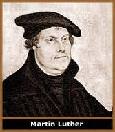
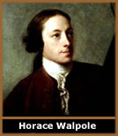
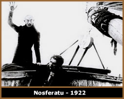
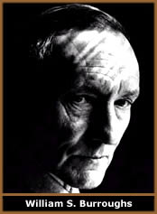
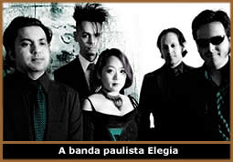

Introdução
Gótico:
apenas uma palavra
Ao longo dos anos, o termo gótico
foi usado como adjetivo e classificação de várias
expressões artísticas, estéticas e comportamentais.
Mas, em sua maioria, estas classificações não
possuem nenhuma relação com o significado primitivo
da palavra.
O termo Gótico, que originalmente
significa apenas relativo a Godos ou proveniente deles,
foi usado a partir do início da Renascença, para
designar de forma depreciativa a produção cultural
ocorrida entre os séculos XII e XV e posteriormente de
toda Idade Média, a qual foi associado o conceito de Idade
das Trevas, em oposição à nova Idade da Razão
ou da Luz: o Iluminismo (XVII e XVIII). Mas nos séculos
XVIII e XIX, por exemplo, gótico foi associado ao período
medieval e aplicado à Literatura. Além disso, o
termo Goticismo tem origem inglesa, Gothicism,
e relaciona-se apenas à Literatura.
Em 1979 o termo gótico já foi utilizado
para designar o movimento sócio-cultural que se constituía
e se consolidaria poucos anos depois. Mas, a subcultura gótica/darkwave
não possui nenhuma relação com os Godos,
como a própria "arte gótica" (entre os
séculos XII e XV) não possui. Portanto, em uma de
suas primeiras aplicações, a palavra Gótico
já foi usada com um sentido que não corresponde
ao original, e torna-se nítida a diversidade de significados
que esta palavra traz em si.
A subcultura Gótica/Darkwave
A subcultura gótica (relacionada a Darkwave
a ponto de ser assim chamada por alguns) como conhecemos atualmente,
é um contexto artístico e comportamental que inclui
literatura, música, cinema, artes plásticas e vestuário
(entre outros), de forma que um elemento enriqueça o outro
e multiplique-se.
Pode-se dizer que sua origem ocorreu nos primeiros
anos da década de 1980, mas suas influências iniciam-se
no Romantismo do século XIX e passam pelo Modernismo, com
o Impressionismo, Expressionismo e Surrealismo e Cabaret Culture,
do século seguinte. Porém, a Geração
Beatnick, inspirada na boêmia moderna, filosófica
e artística francesa a partir de 1950 e posteriormente
pelos escritores Beats dos Estados Unidos, é a influência
mais recente e significativa da subcultura gótica/darkwave.
No final da década de 60, os beatnicks se
diluíram e formaram ramificações como o movimento
Punk e Glam da década de 70. A música de artistas
como David Bowie e Velvet Underground, referências do Glam
e do Punk, trouxeram vários elementos da cultura beatnick,
como a prosa e a poesia. Dessa forma, o Glam e o Punk foram influenciados
pela Cultura Beatnick, mas também foram determinantes nas
características da subcultura gótica.
Mas todas essas tendências que influenciaram
e compuseram a subcultura gótica, desde o Romantismo até
as mais recentes, são apropriações e releituras
através de abordagens distintas, muitas vezes, de forma
alegórica e metafórica. As transições
entre uma e outra, ocorrem sem rompimentos bruscos, de forma que
as tendências posteriores resgatam elementos primitivos
e somam-se aos seguintes.
É importante salientar que os fatores que
definem uma corrente artística, filosófica ou apenas
comportamental, não são apenas os temas adotados,
mas principalmente a abordagem, ou a forma como os temas são
trabalhados e expostos.
A subcultura gótica/darkwave, não
se baseia apenas em alguns temas específicos, mas principalmente,
em uma abordagem própria. Para que possamos compreender
com mais clareza as características principais que compõem
a subcultura gótica, desde o uso do termo gótico
até as influências culturais e comportamentais mais
presentes, é necessário recapitular alguns pontos.
A Baixa
Idade Média
O período da Idade Média, compreendido
entre os séculos V e XV, divide-se em dois sub-períodos:
Alta Idade Média (V à XI) e Baixa Idade Média
(XI até o século XV). É no início
da Baixa Idade Média, na França, que surge a Arte
Cristã ou Opus Francigenarum (obra francesa),
que, aos poucos, substituiria o estilo românico e futuramente,
no período da Renascença, passaria a ser conhecida,
pejorativamente, como Arte Gótica.
O Teocentrismo, baseado na concepção
de que Deus é o centro do universo, foi a corrente de pensamento
predominante no período medieval. Assim, a Igreja Católica,
responsável pela "educação espiritual"
dos homens, consolidou-se como a principal autoridade. O poder
econômico e político, e as influências sobre
as ciências e artes, subordinavam reinados ao comando do
clérigo. Era a Igreja que ditava os rumos que a ciência
deveria seguir, que dirigia os exércitos e proclamava as
leis. Além disso, a peste negra do século XIV, a
exploração do feudalismo e a imutável hierarquia
social contribuíram para a criação de uma
situação calamitosa no fim do século XV.
No século seguinte haveria o início de uma reação
em todos os níveis, com o começo da Idade Moderna
e a transição sócio-econômica para
o Renascimento.
A
Renascença e a Idade das Trevas
O
período iniciado a partir do século XV (apesar de
iniciar em épocas diferentes em cada lugar e ter várias
fases) conhecido como Renascença, que surgiu na Itália
e distribui-se gradativamente por outras regiões do continente
europeu, consolidou uma idéia de ressurreição
nas artes e na ciência baseadas no resgate da Antiguidade
clássica greco-romana.
Além de inovações nos aspectos
políticos e sociais e avanços técnicos e
científicos, foi na Renascença que outros continentes
foram descobertos através da navegação, que
nasceu a imprensa e inventou-se a bússola. Foi neste período
que o alemão Martin Luther deu início à Reforma
Protestante; que Michelangelo pintou a Capela Sistina; que Copérnico
escreveu De Revolutionibus Orbium, entre outros.
Os renascentistas acreditavam que a arte clássica
greco-romana, que admiravam e buscavam reviver, havia sido denegrida
na Idade Média pelos cristãos e, que a Igreja, através
do poder exercido pelos dogmas religiosos, vetava os avanços
tecnológicos e condicionava a produção artística.
Neste contexto renascentista inclui-se também uma forte
oposição ao Clero, embutida no Antropocentrismo,
corrente filosófica na qual o homem é o centro do
universo e, naturalmente, oposta ao Teocentrismo medieval. Dessa
forma, mesmo sendo considerada uma etapa evolutiva do período
medieval, a Renascença desprezava a cultura da Idade Média.
Assim, grande parte da arte produzida na Idade
Média, como a arquitetura, escultura e pintura, foi classificada
como gótica, em alusão ao Godos, povo germânico
que invadiu o império romano a partir do século
III.
Esta classificação tinha a clara
intenção de denegrir a produção artística
medieval, por considerá-la bárbara, rude, grosseira,
exagerada; ou seja, com os mesmos adjetivos que caracterizavam
os Godos.
Assim, a civilização dos Godos, que
havia sido diluída no século VIII, portanto, 700
anos antes da Renascença, tornou-se um "bode-expiatório"
dos renascentistas e a própria palavra Gótico teve
seu sentido ampliado, podendo ser compreendido como sinônimo
de bárbaro ou vulgar. Ainda, ao longo
dos anos, a Idade Média iria tornar-se conhecida como Idade
das Trevas, Noite da Humanidade, entre outras denominações.
Racionalismo,
Iluminismo e Revoluções
Personagens como René Descartes, John Locke,
Pascal e Newton figuraram no século XVII. O Racionalismo,
baseado no conceito de que apenas a Razão (raciocínio
lógico) seria suficiente para o desenvolvimento da humanidade,
e o Humanismo, resgatando os filósofos da Antiguidade,
eram as correntes que influenciavam as artes e as ciências.
No panorama artístico, a arquitetura, escultura e pintura,
destacaram o Classicismo e o Barroco.
Em meados do século XVII surge Iluminismo
- tendo seu apogeu no século XVIII - que de certo modo,
é herdeiro dos conceitos racionalistas e humanistas dos
séculos anteriores aliado a uma maior liberdade de expressão
individual. É o movimento iluminista que proclama o início
de uma "era de luz" para a humanidade e um dos impulsionadores
do capitalismo, além de tornar-se uma das principais referências
na arte.
Neste momento, surge na Inglaterra e alastra-se
pela Europa, um fenômeno sócio-político que
seria conhecido como a 1ª Revolução Industrial.
Ainda, desenvolve-se o Liberalismo político/ econômico
e consolida-se o capitalismo. Assim, o século XVIII torna-se
conhecido como o "Século das Luzes". Porém,
todas essas mudanças bruscas trazem efeitos colaterais
no âmbito social.
Os avanços tecnológicos que proporcionaram
a Revolução Industrial deram início a uma
urbanização desenfreada e sem planejamentos com
a migração do homem do campo para as áreas
centrais, que resultaram em cidades sem infra-estrutura social
e administrativa. As jornadas de trabalho tornam-se muito extensas
e o valor da mão-de-obra, irrisório. Iniciam-se
reações violentas por parte dos trabalhadores explorados
e desempregados. Em algumas regiões, o número do
crescimento populacional quadruplica. Em Paris, 25% da população
é constituída por mendigos. Surgem as epidemias
de tifo, cólera e tuberculose. Por outro lado, nascem os
conceitos de capitalismo e a classe burguesa. No final deste século
ocorre a Revolução Francesa (1789), que marca o
início da era contemporânea. Baseadas em conceitos
do Iluminismo, no século XVIII se desenvolvem as idéias
Republicanas, postas em prática também na Independência
dos Estados Unidos, em 1777. No Brasil, estas idéias também
chegaram na mesma época, mas a nossa tentativa de independência,
a Inconfidência Mineira, é abortada em 1789.
O quadro de miséria e desigualdade criado
na Europa gerou uma insatisfação social e resultou
num processo de regressão que buscava os ideais medievais
ignorados pela Renascença. Inicialmente, essa tendência
desenvolvia-se apenas no sentimento e comportamento coletivo.
Porém, logo passou a designar um rumo artístico
e uma nova visão do mundo centrada no indivíduo.
A partir desta nova concepção iniciou-se o período
do Romantismo.
O Romantismo
O Romantismo é um período cultural
que se inicia na Europa no final do século XVIII, estendendo-se
e desenvolvendo-se por outras partes do globo até o final
do século XIX. Pode-se considerar que seu início
ocorreu na Itália, Inglaterra e Alemanha (na Alemanha conhecido
como Sturm und Drang - Tempestade e ímpeto). Porém,
foi na França que o romantismo intensificou-se mais do
que em qualquer outra nação. Foi através
dos artistas franceses que os ideais românticos se solidificaram
pela Europa e América. Sob o aspecto ideológico,
o Romantismo pode ser considerado uma reação de
fuga, ao iluminismo e racionalismo do período anterior.
As principais características do Romantismo
são a valorização das emoções
em temas que recorrem à religião, nacionalismo,
amor, individualismo e subjetivismo, desenvolvidos a partir da
originalidade e liberdade criativa do artista. Na pintura, o francês
Delacroix e o espanhol Francisco Goya são os maiores representantes.
Na música, ocorre a potencialização da expressão
individual através de temas folclóricos e nacionalistas.
Neste período romântico da música, destacam-se
as últimas obras de Beethoven, além das composições
de Wagner, Chopin e Schumann, entre outros. Mas foi através
da Literatura que o Romantismo teve suas expressões mais
intensas e solidificou sua identidade.
Romantismo Literário
e Gothic Novel
A obra do escritor alemão Goethe,
Os Sofrimentos do Jovem Werther, publicada em 1774 foi
uma das precursoras do romantismo. Este livro trazia intensidade
emotiva sob a liberdade criativa do autor, além de outros
aspectos fundamentais do romantismo.
Além disso, uma das principais características
do Romantismo Literário era a evocação à
Idade Média em seus temas. Neste caso, o autor almejava
uma idealização que não correspondia à
sociedade ou ao período em que vivia realmente. Esta característica
é conhecida como "Espírito de evasão".
Porém, esta referência medieval do romantismo era
sob uma perspectiva idealizada. Isto é, buscava resgatar
valores como honra e valentia que, na visão do escritor,
eram comuns no período medieval, mas que não necessariamente
existiram.
Horace
Walpole (O Castelo de Otranto - 1765) também abordou
a Idade Média, mas diferentemente da "idealização
positiva" de outros românticos, o fez através
de uma visão soturna de cenários decadentes (como
castelos em ruínas) que impunham um clima de mistério
e terror sobrenatural ao leitor. Foi este conceito de terror e
sobrenatural, entre outros elementos usados, que passou a ser
classificado como Gothic Novel. Neste caso, o termo Gothic
é aplicado como sinônimo de obscuro ou medieval.
Ainda, Literary Gothicism, que no Brasil seria conhecido
como Romance Gótico ou Literatura Gótica,
teria grande influência no ultra-romantismo brasileiro.
Os termos Gothicism ou Goticismo devem ser associados
apenas à Literatura.
Nas últimas décadas do século
XVIII emergiram escritores como Ann
Radcliffe, autora de Os Mistérios de Udolpho
e a poesia de William
Blake com Canções da Experiência e
da Inocência (ambos em 1794), além de Frankenstein,
de Mary
Shelley, já no início do século XIX.
Até as décadas de 30 e 40, o romantismo ainda figura
como a principal orientação da produção
artística. Essa tendência romântica atinge
também a moda, hábitos e costumes da sociedade.
Na França, por exemplo, há um resgate de elementos
do vestuário, linguagem e costumes do período anterior
à Revolução. Na Inglaterra, o Literary
Gothicism ressurge na era vitoriana, entre a burguesia.
Ainda na primeira metade do século, tem
início o Romantismo brasileiro. A obra Suspiros Poéticos
e Saudades (1836) de Gonçalves de Magalhães
é considerada a precursora desse estilo literário
no Brasil. O Romantismo no Brasil estende-se "oficialmente"
até 1880 e divide-se em três gerações:
Nacionalista, Ultra-romântica
e Condoreira.
Na segunda metade do século XIX surgiram
outros movimentos que influenciaram várias expressões
artísticas. O Esteticismo com o conceito de auto-suficiência
da arte (arte pela arte), sem que esta sofresse interferência
de outros valores, como sociais, religiosos ou políticos.
O parnasianismo, essencialmente literário, que reagia aos
excessos românticos e negava o subjetivismo, baseando-se
no domínio da razão e nos ideais voltados para o
belo. Também em reação aos excessos do Romantismo,
surge o Realismo e o Naturalismo. No Brasil temos uma transição
gradual, com autores como Machado de Assis, autor de Memórias
Póstumas de Brás Cubas (1881) e inúmeros
outros clássicos reconhecidos internacionalmente.
O Simbolismo
O Simbolismo, surgido na França na segunda
metade do século XIX, caracteriza-se pelo subjetivismo,
individualismo e misticismo; rejeitando valores do realismo e
naturalismo como a abordagem social. Artes plásticas, teatro
e, principalmente, Literatura, são orientadas pelas tendências
simbolistas.
No Simbolismo literário rejeitava-se as
formas parnasianas e valorizava-se a sugestão sutil das
idéias, usando as metáforas como um de seus principais
recursos. Ao mesmo tempo em que o Simbolismo criticava os excessos
românticos, fazia uso de certos elementos deste, como o
próprio subjetivismo. O Manifesto Simbolista (1886),
de Jean Moreas, declara a poesia simbolista "inimiga
do ensino, da declamação, da falsa sensibilidade,
da descrição objetiva".
O ensaio de Poe,
The Philosophy of Composition (1846), influenciaria também
as teorias de Baudelaire,
que por sua vez agiu diretamente sobre Mallarmé. A obra
de Poe também se faz atuante sobre Rimbaud e Oscar Wilde
e ainda sobre o Modernismo do início do século XX.
Através de sua obra, As Flores do Mal (1857),
Baudelaire passou a ser considerado o precursor do simbolismo
literário.
Há ainda, o Decadentismo, no qual abandona
o conceito de objetividade realista e volta-se às realidades
interiores e subjetivas, compondo também a corrente simbolista.
Porém, segundo Fernando Pessoa, esses movimentos, especialmente
o decadentismo e o simbolismo, surgiram do romantismo e eram "inversão
das posições mentais da inteligência".
O Modernismo
Neste momento, o pré-modernismo já
sugeria os conceitos inovadores que se destacariam anos depois
com a consolidação do Modernismo. A Belle Époque
(aproximadamente 1900-1910), surgida na França, é
resultado de um período otimista que se reflete nas artes,
como o cinema, e nos níveis sociais, com o Cancan dos Cabarés
e o glamouroso Moulin Rouge. Paris torna-se a capital
mundial da cultura e os boulevards, livrarias e teatros consolidam
a imagem da prosperidade intelectual e cultural francesa. Esta
"atmosfera" entende-se até meados da década
de 40 e consagra um período de ebulição cultural,
política e social na Europa.
Nas primeiras décadas do século XX,
Einstein anuncia a Teoria da Relatividade, Santos Dumont voa com
o 14 Bis, Auguste Lumière concebe a fotografia colorida
e, nas artes plásticas, surge o cubismo de Picasso e Braque.
O escritor e teatrólogo francês, Antonin Artaud,
é uma das figuras mais influentes no meio intelectual francês
e europeu. Os movimentos vanguardistas, como o Art Nouveau
na pintura e principalmente arquitetura, buscavam conceitos artísticos
que represen- tassem as novas tendências da humanidade,
mas principalmente, uma reação aos valores europeus
dos últimos três séculos, movidos pelas incertezas
políticas e pela psicanálise de Freud.
O arquiteto Le Corbusier foi um dos destaques modernistas,
enquanto na música, Stravinsky e Shoenberg são ícones
do movimento, além de Debussy, Satie, Stockhausen, John
Cage e outros. Na Literatura Modernista, que de certa forma combinava-se
com o Simbolismo, consagrou autores como T. S. Elliot, James Joyce,
Fernando Pessoa, Apollinaire e Franz
Kafka. A Staatliches Bauhaus, escola alemã
de artes e arquitetura fundada em 1919, foi uma das maiores propagandistas
e precursoras de movimentos vanguardistas até 1933, quando
foi fechada pelo estado nazista na república de Weimar,
sob a pena de "degenerar" a arte pura européia
combinando-a com outras influências (orientais, por exemplo).
Sendo esse conceito exatamente o oposto dos ideais fascistas que
promulgavam a superioridade dos europeus.
Expressionismo
O Expressionismo surge em 1905, mas ganha força
após a Primeira Guerra Mundial. O Expres- sionismo busca
retratar a realidade com as proporções sentidas,
não apenas reproduzir a realidade. Assim como o Cubismo
busca mostrar vários pontos de vista em vários tempos,
o Expressionismo também vem afirmar esteticamente que não
existe uma realidade única. De certa forma, compartilha
características comuns com o romantismo, como o subjetivismo,
além do cubismo e simbolismo, e soa como uma reação
artística à Primeira Grande Guerra. Nesse momento,
há também uma influência das artes africanas
e orientais dentro do contexto europeu.
O norueguês Edvard Munch é um dos
precursores do expressionismo e sua influência estenderia-se
e tornaria-se uma das mais intensas nos anos seguintes do movimento.
Vincent van Gogh, que cometeu suicídio em 1890, portanto,
15 anos antes do surgimento "oficial" do Expressionismo,
também teve grande influência entre os pintores expressionistas.
Cinema
No
cinema alemão o expressionismo encontrou sua tradução
para as massas. Os filmes O gabinete do Dr. Caligari
(1920) e Nosferatu (1922), inspirado no livro Drácula
de Bram
Stoker (1897), Metrópolis (1927) e Drácula
(1932, com Bela Lugosi no papel principal) são
símbolos do expressionismo. Ainda no cinema, na década
de 40 surgiu o Cinema Noir.
Baseado em Literatura policial, Cinema Noir tem
como principais características detetives astutos, policiais
inflexíveis, damas sensuais e vilões perversos,
envolvidos em investigações e tramas conspiratórias.
Outro elemento importante do Cinema Noir é a ambientação
das tramas, que ocorre geralmente nas metrópoles americanas,
envolvidas em uma atmosfera de sombras e mistério. Como
nos filmes expressionistas, a fotografia em preto e branco ressalta
este clima soturno.
A expressão Nouvelle Vague, criada
pela escritora Françoise Giroud, surge na revista francesa
L''Express em 1958, inicialmente, para designar um fenômeno
contestatório dos movimentos artísticos. Porém,
esta expressão viria fixar-se para definir o movimento
cinematográfico francês que surge nesta mesma época.
Influenciada pelo neo-realismo italiano e por diretores
norte-americanos como Alfred Hitchcock, John Ford e Howard Hawks,
a Nouvelle Vague recria a linguagem cinematográfica e aborda
essencialmente questões existencialistas, praticamente
abandonando temas corriqueiros como política e sociedade.
Ainda, traz como uma de suas propostas técnicas, a reação
aos aspectos convencionais do cinema, principalmente, a narrativa.
Nesse contexto, enquadram-se também obras de baixo orçamento
com equipes reduzidas e filmagens em locais públicos.
Essas características influenciaram toda
a cinematografia mundial, inclusive o cinema novo brasileiro.
Jean-Luc Godard e François Truffaut são as maiores
referências da Nouvelle Vague francesa. Algumas das principais
obras da fase inicial da Nouvelle Vague são Acossado
(de Godard), Os Incompreendidos e Jules et Jim,
(François Truffaut), Hiroshima, Mon Amour
(Resnais - 1959), Paris Nos Pertence (J. Rivette - 1960)
e Trinta Anos Esta Noite (Louis Malle – 1963).
O sueco Ingmar Bergman também teve papel
significativo. Entre seus filmes, destacam-se O Sétimo
Selo (1956), onde um homem aposta sua vida jogando xadrez
com a morte; Morangos Selvagens (1957), Persona
(1966), Gritos e Sussurros (1972), e O Ovo da Serpente
(1976), entre outros de intensa densidade dramática.
Impressionismo
O movimento impressionista, que buscava uma precisão
maior nas cores e suas combinações, teve Renoir
e Monet como suas principais referências na pintura. A música
impressionista passa a descrever imagens e algumas obras trazem
títulos como Reflexos na Água (Claude Debussy
– França 1862 - 1918) baseada em estruturas modais
do Oriente e do período medieval.
Dadaísmo
Em 1916, na cidade suíça de Zurique,
surge o movimento vanguardista denominado Dadaísmo, que
é compreendido por alguns como uma resposta das artes à
1ª Guerra Mundial. Caracterizado pela oposição
a todo tipo de coerência e equilíbrio artístico,
o dadaísmo abandonou os rigores acadêmicos e destacou
a liberdade criativa através da arte abstrata.
Seu slogan era: "A destruição também
é criação".
Até mesmo a palavra dada foi escolhida ao
acaso para batizar o movimento. Hugo Ball e Tristan Tzara, dois
dos fundadores do dadaísmo, escolheram, aleatoriamente,
uma palavra num dicionário alemão-francês.
Dada, que em francês significa "Cavalo
de Pau" numa linguagem infantil (pré-lógica)
era um termo suficientemente vago e desconexo; ou seja, o ideal
para representar o "espírito dadaísta".
O dadaísmo desenvolveu-se principalmente
na literatura e artes plásticas até aproximada-
mente 1921. Mas suas bases foram essenciais no modernismo. Principalmente
para o Surrealismo, que é derivado direto do dadaísmo.
Surrealismo
Em 1924, a publicação de Manifesto
do Surrealismo, de André Breton (inspirado pelos conceitos
psicanalíticos de expressão do Inconsciente), marcou
oficialmente o surgimento do movimento. No surrealismo, a criação
artística manifesta-se livremente de modo a criar uma realidade
subjetiva. Temas como a fantasia, tristeza e melancolia também
são abordadas no surrealismo.
Na década de 20 o Surrealismo desenvolve-se
também no Cinema. Um cão Andaluz (1928)
do espanhol Luis Buñuel escrito em parceria com Salvador
Dali é considerado um manifesto do cinema surreal. Dois
anos mais tarde, Buñuel produz A Idade do Ouro,
outra referência do movimento. O Anjo Exterminador,
A Bela da Tarde, O Discreto Charme da Burguesia e o Obscuro
Objeto do Desejo, também são obras significativas
de Bruñel. Em 1932, o francês Jean Cocteau produz
Sangue de um poeta.
No cinema surrealista não há preocupações
com enredos. Apenas as imagens expressam desejos irracionais através
de metáforas visuais. Além do desprezo pela burguesia,
convenções morais, religiosas e políticas.
Cabaret
Culture
Oficialmente, a Cabaret Culture compreende
o entre-guerras (1918-1939). Mas antes, os Cabarés já
reuniam vanguardistas que filosofam sobre política e inovadoras
tendências artísticas. A "cultura de cabaré"
instaura movimentos que se denominam underground, alternativo
ou contra-cultura pelos pensadores. As obras do escritor
Bertold Brecht e do músico Kurt Weil (ambos alemães)
são sólidas referências deste período.
Enquanto o fascismo de Benito Mussolini e Stalin e o nazi-fascismo
de Hitler impunham a tirania sobre a Europa.
Beatnick e suas
composições
Aproximadamente a partir de 1950 surge a geração
Beatnick, caracterizada por resgatar elementos dos primeiros anos
do século XX, no período da "Geração
Perdida", dos anos que intercalaram as duas grandes guerras.
O existencialismo de Jean-Paul Sartre e Martin Heidegger, enfatizando
o indivíduo e a singularidade de suas experiências,
é uma das bases "filosóficas" da geração
Beatnick. A Cultura Beatnick também teve como influência
o situacionismo, movimento artístico e sócio-cultural,
que surgiu na Itália na segunda metade da década
de 50 e estendeu-se fortemente até início dos anos
70, promovendo e incentivando uma revolução de conceitos
nas artes, tendo até mesmo uma presença marcante
no movimento parisiense Maio de 68. Apesar disso, os
Beatnicks também buscavam uma espiritualidade transcendental
e "não religiosa".
Roupas
escuras, boina preta e óculos escuros compõem a
indumentária dos Beats que se interessam pelas culturas
africana, ameríndia e oriental, reunindo-se em clubs
à meia-luz e ambientes que remontam ao decadentismo e à
cultura de cabaré parisiense, mas movidos inicialmente
ao som de um bom Jazz norte-americano.
Dentro do beatnick americano surgiu Jack Kerouac,
autor de On the Road (1957), livro emblemático
dos beats americanos. Kerouac também teria sido quem cunhou
a expressão Beatnick, que John Clellon Holmes consagraria
no artigo This is the Beat Generation, de 1952. Allen
Ginsberg é autor do poema The Howl (1956), obra
considerada um dos marcos dessa cultura. Ginsberg também
participaria das letras e shows do The Clash no início
dos anos 80, além de participações com Paul
McCartney e Elvin Jones, entre muitos outros. William Burroughs
foi um dos beats mais atuantes com suas obras Naked Lunch
e Junkie e influenciou as composições de
David Bowie na década de 70.
O Jazz era o estilo mais consumido entre os beats,
mas na década de 60 o Rock também é adotado
como uma referência do movimento. Originalmente, a poesia
beat era recitada com o apoio de músicos vanguardistas
como os jazzistas, e posteriormente, com o Rock. Não apenas
literariamente, mas também "filosoficamente",
Rimbaud e Baudelaire eram grandes referências culturais
para os beats (como no caso do poeta William Burroughs). A banda
inglesa Manfred Mann popularizou o visual do movimento que, no
decorrer dos anos, iria transformar-se num estereótipo
consumível pelas massas.
"Eram instintivamente individualistas,
mas nunca conseguiram manter o mundo fora dos seus sonhos".
Esta frase do artigo This is the Beat Generation, sintetiza
o movimento Beatnick, que foi um dos mais influentes da história
recente e, de certa forma, antecessor dos hippies que surgiriam
anos depois, influenciando também vários movimentos
posteriores e, conseqüentemente, a subcultura gótica/darkwave.
Hippie, Glam e
Punk – Intersecções até a Subcultura
Gótica
A origem do termo Hippie está associada
ao escritor Norman Mailer que definiu o existencialismo dos beats
americanos como "Hipster" em 1957. Fatores políticos,
econômicos e sociais fizeram dos hippies um grupo de estética
multicolorida e comportamento politizado. Os estereótipos
e a "filosofia" dos Beatnicks e dos Hippies são
um tanto distintas. Mas há uma linha que une esses dois
grupos. Naturalmente, a geração Beatnick adotou
outras influências no decorrer dos anos, e em 1967 a cultura
Beatnick dos Estados Unidos se diluiu em Hippie, Glam-Punk e Punk-Beat,
sendo que estas duas últimas, são em grande parte
o mesmo movimento.
Enquanto isso, o escritor canadense Leonard Cohen
abandona sua vida literária e aventura-se na música.
Seu álbum de estréia, Songs of Leonard Cohen,
influenciaria artistas como The
Sisters of Mercy e Nick Cave.
Paralelamente na Alemanha, em meados da década
de 60, surgia do experimentalismo um estilo conhecido como Krautrock,
baseado numa combinação psicodélica com improvisação
do Jazz e sintetizadores que produziam uma sonoridade eletrônica,
de classificação musical complexa, mas que expôs
a Alemanha no cenário Pop/Rock europeu. Mais tarde, o Krautrock
foi uma das principais influências das tendências
da música eletrônica, como o Sith - Pop e EBM.
No início da década de 70, o Punk
nova-iorquino, do Club CBGB, cultivava características
comuns aos beats. Numa visita à cidade, Malcolm McLaren,
dono de uma Sex Shop em Londres, resolveu levar a "ideologia"
Punk para a Inglaterra e reuniu um grupo de adolescentes, freqüentadores
de sua loja, criando o Sex Pistols. O "punk britânico",
que emergiu para sociedade e a mídia entre 1976 e 1977,
concebido por Malcom, era intencionalmente exagerado se comparado
ao original, de Richard Hell e sua Blank Generation.
Ainda em 1970, surge o Glam-Rock e o Glam-Punk
que influenciariam o Gótico do final desta década.
Em Nova York, a banda The New York Dolls é a referência.
Na Inglaterra, Marc Bolan, T-Rex e David Bowie tornam-se ícones
desta tendência. Em 1974, David Bowie lança o álbum
conceitual Diamond Dogs, que aborda o romance 1984
de George Orwell. Diamond Dogs foi definido pelo próprio
Bowie como Gothic, em alusão a um espírito
dramático e barroco do século XX. Bowie ainda produziu
álbuns solos de Iggy Pop, ex–The Stooges, que influenciariam
posteriormente, os vocais de Peter Murphy do Bauhaus.
Em 1977 a banda Nova-Iorquina Suicide, lança seu
primeiro álbum que mistura música eletrônica
e punk obscuro.
Enquanto isso o Rock passa da fase "adolescente"
e as bandas The Doors e The Velvet Underground surgem na cena
em 1967. O prédio, conhecido com Factory, alugado pelo
pintor Andy Warhol abriga vanguardistas de várias expressões
e torna-se uma referência cultural e o principal reduto
de criação do Velvet Underground. O vocalista e
guitarrista da banda, Lou Reed, foi fortemente influenciado pelo
amigo e "guru pessoal", Delmore Schwartz, escritor americano,
chegando a dedicar várias músicas ao autor.
Quando Lou une-se ao músico erudito John
Cale, sua pretensão é compor letras no estilo da
Literatura Beatnick associada ao instrumental de Rock experimental.
Patty Smith também traz referências semelhantes a
partir de seu disco de estréia, Horses (1975).
Enquanto isso, Jim Morrison, também influenciado pela prosa
beat e William Blake, traça ao lado de Ray Manzareck uma
trilha semelhante às intenções da dupla Lou
Reed e John Cale. O experimentalismo musical e a forte presença
da cultura beat são determinantes na subcultura glam/punk/krautrock
que foi influência direta da cultura gótica/darkwave
que se formaria a seguir.
Os módulos
da subcultura gótica
Em 1972, o filme musical Cabaret, com Liza Minelli,
com sua estética de cabaré e decadência berlinense
do início da década de 30, influenciou em 1976 um
grupo de Londrinos importantes: O Bromley Contingent, que incluía
Siouxsie Sioux, Sue Catwoman, Debbie Juvenile, Philip Salon, John
Richie (Sid Vicious), Berlin, Steve Severin e Billy Idol. A estética
Cabaret é reciclada e chega ao Gótico.
No final da década de 70, o termo Gótico
torna-se "sinônimo" de irracional, imaginativo,
ou "que ousa penetrar nas trevas da mente e terrível
condição humana", como havia sido usado
na Inglaterra. Porém, até os primeiros anos de 1980,
os termos Gótico/Goth e Positive-Punk
são usados para descrever o mesmo movimento.
Esse período, ainda classificado como pós-punk,
traz uma certa indefinição musical devido às
diversas influências agregadas pelas bandas que surgiam.
Outros ascendentes do Punk partiam para uma sonoridade mais experimental
e foram classificadas como New Wave. Ainda nesse mesmo contexto,
mas na Inglaterra, surge o New-Romantic e o No Wave. De 1979 a
1983, algumas bandas pós-punk seriam chamadas de Góticas,
outras não. Posteriormente, bandas de outros estilos musicais
também seriam chamadas de Góticas.
O movimento New-Romantic consistia numa versão
mais suave e comercial da New Wave americana. A sonoridade trazia
influências de Soul, Funk, Disco e Punk com sintetizadores
e baterias eletrônicas. Depeche Mode, David Bowie e Duran
Duran eram as maiores expressões do movimento, que contava
ainda com o surgimento da MTV americana, que teve grande participação
na divulgação dos clipes das bandas. Porém,
o New-Romantic não possui uma relação direta
como o Romantismo e suas releituras anteriores, mas também
compõe parte da base cultural que estava se desenvolvendo.
Um pouco antes, com o uso de temas niilistas, timbres
graves das guitarras e linhas de baixo, a No Wave utilizava-se
também de microfonia e outros sons que interferissem na
construção comum da música. Nesse momento,
o Industrial também já estava se estruturando.
Ainda neste período, sob as novas perspectivas
da Revolução Sexual e o impasse da Guerra Fria,
além da música, o cinema também influenciava
na moda e no comportamento. Foi neste período, aproximadamente
1979 a 1983, que a subcultura gótica/darkwave aglutinou
elementos da Geração Beatnick, Punk, pós-Punk,
Glam, New-Romantic e No Wave, entre outros. Esta combinação
de tendências e a consolidação que viria a
seguir ocorreram principalmente na Inglaterra. Mas no mesmo período
bandas como Cristian Death, Misfits e TuxedoMoon já estão
em atividade nos Estados Unidos.
Arquétipos
no cinema 80/90
Em 1982, o filme Blade Runner (de Ridley
Scott), que aborda o conflito entre seres humanos e andróides
humanizados nas primeiras décadas do século
XXI, reafirmou as tendências futuristas
de estilo e vestuário. No filme The Hunger (Fome
de Viver) de 1983, David Bowie e Catherine Deneuve
representam um casal de vampiros em busca de sangue. Há
uma cena em que a dupla, usando Ankhs egípcios, está
à espreita de suas presas numa casa noturna ao som
de Bela Lugosi’s Dead, tocada pelo próprio
Bauhaus. Há ainda o filme alemão produzido
em 1987, Der Himmel ünder Berlin (de Win Wenders,
lançado também com os títulos Wings
of Desire ou Asas do Desejo), dois anjos
perambulam pela Berlim dividida do pós-guerra, confortando
a tristeza dos cidadãos, até que um dos anjos
apaixona-se e deseja tornar-se humano.
Estes três filmes abrigam arquétipos
que seriam reconhecidos, nos anos seguintes, como alguns dos elementos
que comporiam a subcultura Gótica. Em Blade Runner, há
a figura do andróide sensível, humanizado e conflitante
num cenário urbano decadente. The Hunger inclui num mesmo
contexto David Bowie (ícone do Glam da década 70),
a banda Bauhaus (principalmente Peter Murphy) e a figura do Vampiro
com a simbologia do Ankh, e aborda a questão da mortalidade
humana. Em Asas do Desejo, há um conflito "razão
x paixão" com abordagem decadente e existencialista
dos anjos em meio aos cidadãos comuns.
Nos anos 90, a refilmagem de Drácula
de Bram Stoker (1992), feita por Coppola se torna uma nova referência.
Também em 1994, Entrevista com o Vampiro, o livro
escrito em 1976 por Anne Rice se torna filme, retomando questões
existenciais do molde de The Hunger, de 1983.
A consolidação
O termo Gothic, usado pela mídia
e adotado por algumas bandas, prevalece a partir de 1983/84 e
as bases da subcultura, tanto na música como no comportamento
e visual, já estão concretizadas. O club londrino
Batcave (Batcaverna) é inaugurado em 1982 e funciona
como um catalisador das tendências emergentes. Na Batcave,
além de Specimen, Bauhaus, Alien Sex Fiend e Siouxsie Sioux,
reúnem-se personalidades como Nick Cave (The Bithday Party)
e Robert Smith (The
Cure). De Londres para a Alemanha, bandas como X-Mal Deutschland,
Einsturzende Neubauten e Malaria são essenciais.
Nos anos seguintes, até o final da década
de 80, a música da subcultura gótica/darkwave vê
emergir novos artistas influenciados, principalmente, pelas bandas
do período pós-Punk. Neste momento, The Sisters
of Mercy, The Mission, Christian Death e outros, estabelecem
"padrões" que seriam seguidos. Mas também
surgem "sub-estilos" que ampliam a diversidade musical
da cena. A sonoridade inclui influências do Pop e música
eletrônica. Bandas que produzem estilos que seriam depois
classificados como Darkwave e Ethereal, já estão
em atividade, como Cocteau Twins (1980/81), Dead
Can Dance (1981), Trisomie 21 (1982) e Opera
Multi Steel (1983/84).
Entre Góticos assumidos e simpatizantes,
alguns nomes incontornáveis do período 1979 a 1986
são: Bauhaus, UKDecay, The Damned, Siouxsie and The
Banshees, The Cure, Echo and The Bunnymen, Soft Cell, Southern
Death Cult, X-Mal, Einsturzende Neubauten, Malaria, Love and Rockets,
Alien Sex Fiend, Sex Gang Children e Specimen. Ainda podemos citar,
Joy Division,
The Smiths, Nick Cave and The Bad Seeds, Virgin Prunes, The Fields
Of Nephillin, The Jesus and Mary Chain, Cabaret Voltaire, Cocteau
Twins, Trisomie 21, Opera Multi Steel, Clan of Xymox, Poesie Noire,
e inúmeros outros, sem aqui nos aprofundarmos nas importantes
tendências, Industrial, Sinth e EBM, ligadas a esta cena.
No Brasil
No Brasil, a subcultura gótica desenvolveu-se
fora do contexto original. A ditadura brasileira que se estendeu
por mais de vinte anos (1964 a 1985), condicionou grande parte
da produção artística e assim, indiretamente,
costumes e comportamento social. Por este motivo, elementos essenciais
como o Glam, não tiveram uma repercussão tão
grande e nítida como na Inglaterra, por exemplo, e o Punk
chegou em outro contexto.
Nas grandes metrópoles brasileiras, até
mesmo o termo gótico chegou com um certo atraso,
passando a ser aplicado a partir de 1985/86, se popularizando
progressivamente até substituir o termo Dark (até
1989/90), que era até este momento usado apenas no Brasil
(em outro sentido, na Itália, como "angolo dark"
ou "dark inglês").
Mesmo
assim, não se pode afirmar que a "essência"
do Gótico e do Dark sejam as mesmas. Elementos figurativos
como o Vampiro tornam-se também referência
estética e criativa nos anos 90.
Atualmente, o conceito brasileiro do que significa
gótico, quando aplicado à subcultura, é muito
amplo. Alguns consideraram gótico, boa parte do
que foi produzido (musicalmente) a partir de meados da década
de 80. Ainda, a cena gótica brasileira não possui
tanta organização como na Europa e Estados Unidos.
Mas a música traz representantes importantes como as bandas
Elegia e The Tears of Blood, entre muitas outras.
A partir da década
de 90
Nos anos 90 podemos citar como referências
musicais do Gótico e Darkwave, bandas como London After
Midnight, Switchblade Symphony, Faith and Muse, Das Ich, Sopor
Aeternus, Inkubus Sukubbus, Bella Morte, Nosferatu, Cranes, Diary
of Dreams, Cruxshadows, Lycia, Wolfsheim, Clan of Xymox, Project
Pitchfork, Love Spirals Downwards, entre tantas outras.
Na passagem para o século XXI esta geração
dos anos 90 já é acompanhada por uma nova safra
de bandas como The Vanishing, The Ghost of Lemora, Collide,
Diva Destruction, Voltaire, Audra, Qntal, Cinema Strange, BlutEngel,
69 Eyes, The Last Days of Jesus, Diorama, Chants of Maldoror,
Hatesex, Android Lust, Ego Likeness, Paralised Age, Thou Shalt
Not, In Strict Confi- dence, Eisbrecher, citando apenas algumas
bandas em estilos distintos da subcultura gótica, pois
a lista é muito maior.
Ainda, subgêneros musicais como o Trip-Goth
e Dark Ambient, estão emergindo e se transformando. A cena
da subcultura gótica/darkwave já conta com clubes
(casas noturnas), eventos, uma intensa produção
cultural (não apenas musical) e a interação
dos seus adeptos, que é uma de suas molas propulsoras.
Atualmente, percebe-se que a subcultura gótica
não apenas se estabilizou em sólidas bases culturais,
mas também continua sendo cultivada, ampliando-se em todas
as partes do mundo. Há um verdadeiro circuito cultural
que não se baseia apenas na música e no comportamento,
mas em todas as outras expressões artísticas que
cada gótico possa criar, recriar e renovar.
Por
Spectrum e Henrique Kipper (www.gothicstation.com.br)